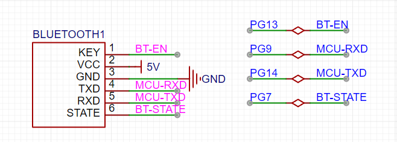

<!DOCTYPE lake>
<p data-lake-id="ufd5df312" id="ufd5df312"><span data-lake-id="u3c38f848" id="u3c38f848">小车通过PG8和PG14和鲁班猫通信,对应的就是USART5串口</span></p><p data-lake-id="uee9c2575" id="uee9c2575"></p><h2 data-lake-id="wwxEw" id="wwxEw"><span data-lake-id="uf99785d3" id="uf99785d3">USART5串口实现</span></h2><h3 data-lake-id="Tf2fY" id="Tf2fY"><strong><span data-lake-id="ud18bd43f" id="ud18bd43f">usart5_rt.h</span></strong></h3><span class="yuque-card-unsupported">[codeblock]</span><h3 data-lake-id="UYeIT" id="UYeIT"><span data-lake-id="u6106dbae" id="u6106dbae">usart5_rt.c</span></h3><span class="yuque-card-unsupported">[codeblock]</span>